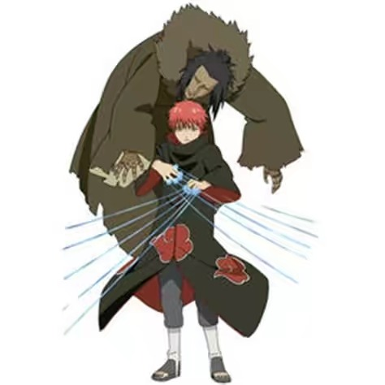

人物历史
早年经历
蝎的父母在执行任务时，被旗木卡卡西的父亲“木叶白牙”旗木朔茂在第二次忍界大战时所杀。
幼小的他曾做出和父母般傀儡来拥抱自己，而“父”与“母”的傀儡就是他所做的第一对傀儡。因为杀了第三代风影，他成了叛忍，后来加入“晓”。如同他的别号般，蝎擅长使用傀儡进行攻击，平常亦会躲在傀儡外壳“绯流琥”里面进行活动。不过其实他真正擅长的是操纵由活人制成的“人傀儡”进行攻击，也只有蝎能够制造人傀儡。蝎所制成的人傀儡能够使用生前所使用的忍术，因此人傀儡依然能保持生前的强悍。其中一件得意之作，就是被他杀死的第三代风影，就能使用生前强大的铁矿砂忍术。
曾和大蛇丸联手干活，但非常讨厌大蛇丸。后来大蛇丸离开晓后和干柿鬼鲛、宇智波鼬一同找到迪达拉并说服其加入，之后与迪达拉组成搭档。
风影救回任务篇
蝎和迪达拉一同来到砂隐村，捕捉一尾人柱力我爱罗，蝎的手下由良见到他们后，把守卫杀掉放他们进了，迪达拉独自去捕捉我爱罗，临走前蝎对迪达拉说不要让他等太久。
迪达拉使用计谋成功抓住我爱罗后，勘九郎追赶上来，于是蝎对付勘九郎并让迪达拉独自离开，因为勘九郎所使用的三个傀儡“乌鸦”“山椒鱼”“黑蚁”也都是他制作的，所以蝎在与勘九郎的交战中将其招式轻易识破，不费吹灰之力就击败了勘九郎，还差点用剧毒要了他的性命 [3] ，但勘九郎最后被春野樱所救。
后来蝎与晓组织的其他人一同使用封印术·幻龙九封尽将守鹤从我爱罗身体中抽离出来。之后千代婆婆和春野樱等人追上，于是开始了与她们的对战 ，并说要把她们变成自己的收藏品。在对战中千代婆婆利用傀儡术把小樱当成傀儡打碎了蝎藏身的绯流琥，露出了本体，让千代婆婆和小樱都非常吃惊，随后蝎又拿出来三代风影傀儡，让千代婆婆明白了为什么三代风影会突然消失，接着千代婆婆则拿出来了蝎把自己父母做成的傀儡。因为没有想到小樱能够破解他的毒素，从而导致三代风影的傀儡被打碎。于是决定使用自己的本体傀儡战斗。
当千代婆婆拿出白秘技·近松十人众后他拿出赤秘技·百机操演对抗，最后被千代婆婆以“父”与“母”人偶刺穿“再生核”而死亡。临死前告诉千代婆婆及春野樱有关大蛇丸的情报，十天后的中午前往草忍者村的天地桥，和派去的间谍药师兜会合，而解决叛徒大蛇丸的计划也被改变。据千代婆婆的说法，蝎本能够避开这一击，似乎他刻意暴露的自己的弱点，最后被她们击败 。
第四次忍界大战
忍者大战爆发后，蝎被药师兜以秽土转生之术复活，被兜指派和迪达拉分别利用引爆粘土与陷阱空袭忍者联军，但在出发之前，和迪达拉再度产生争执。
后来两人遇上勘九郎与佐井所属的埋伏部队，蝎利用操偶术控制其他受到秽土转生召唤的忍者，但后来反遭勘九郎的操偶术牵制行动，更发现勘九郎甚至能召唤自己生前被改造成傀儡的身躯。蝎对于勘九郎的傀儡操演术较以往大幅提升感到惊讶，却认为自己能够在秽土转生状态下保持不死状态，已经达到“永恒之美”的终极艺术，不再需要生前的身躯进行作战。此时佐井利用水墨召唤两个巨人与飞鸟，将迪达拉与蝎从粘土猫头鹰上击落，使得迪达拉和蝎因此掉到勘九郎事先布置好的两具傀儡“黑蚁”内，被勘九郎施展“黑秘技·三秘机杀”刺穿身躯导致败北。
勘九郎认为，蝎之所以强大是因为来自自己的灵魂，并且将灵魂注入自己制作的傀儡，那才是傀儡不朽的原因。虽然蝎曾试着将自己变成傀儡，却始终无法抹去自己的灵魂。对此勘九郎还有所感叹：蝎原是一流的傀儡师，而蝎虽然借着秽土转生术恢复了肉身，灵魂、身体却堕落到跟真正的傀儡一样，只能受到他人的操控。蝎的操演技术和制作的傀儡是不会枯朽的，因为有那些继承其灵魂的后世操演者。蝎受到堪九郎的话语而悟，将自己“父”与“母”托付给勘九郎，并请求勘九郎要将两具傀儡继续传承下去。就在勘九郎答应蝎的请求后，受困于傀儡里的蝎的灵魂得以解脱升天 。
赤砂之蝎：技能 |
 |  |
.jpg ) |
|---|---|---|
砂分身术 |
绯流琥·背部尾刺 |
潜脑操砂 |
千手操武 |
绯流琥·针八波 |
卷轴·炎狱怃阵 |
砂铁时雨 |
绯流琥·义手千本 |
卷轴·剧蚀流砫 |
砂铁结袭 |
赤秘技·百机操演 | |
砂铁散击 |
||
砂铁天翼 |
||
砂铁界法 |
||